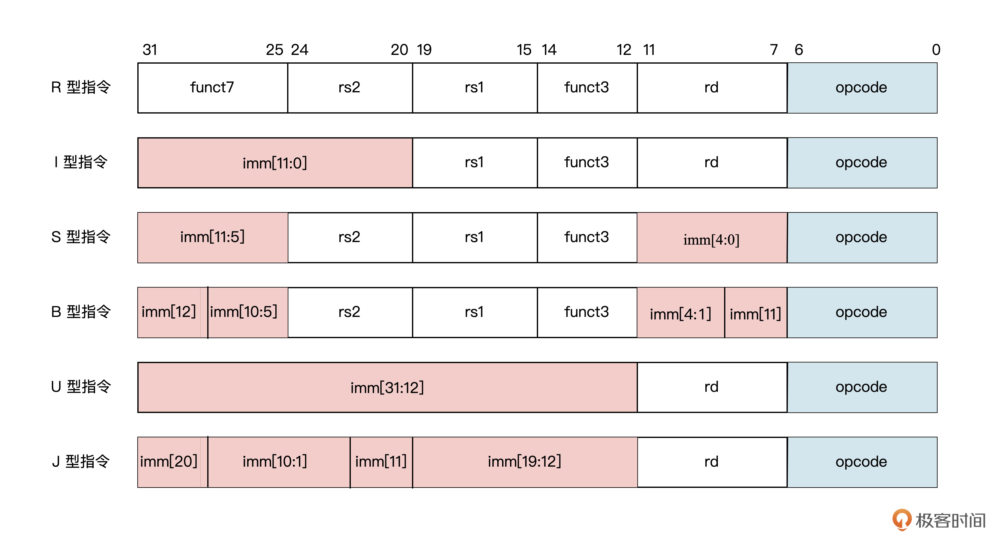

- 00 开篇词 练好基本功，优秀工程师成长第一步.md.html
- 01 CISC & RISC：从何而来，何至于此.md.html
- 02 RISC特性与发展：RISC-V凭什么成为“半导体行业的Linux”？.md.html
- 03 硬件语言筑基（一）：从硬件语言开启手写CPU之旅.md.html
- 04 硬件语言筑基（二）_ 代码是怎么生成具体电路的？.md.html
- 05 指令架构：RISC-V在CPU设计上到底有哪些优势？.md.html
- 06 手写CPU（一）：迷你CPU架构设计与取指令实现.md.html
- 07 手写CPU（二）：如何实现指令译码模块？.md.html
- 08 手写CPU（三）：如何实现指令执行模块？.md.html
- 09 手写CPU（四）：如何实现CPU流水线的访存阶段？.md.html
- 10 手写CPU（五）：CPU流水线的写回模块如何实现？.md.html
- 11 手写CPU（六）：如何让我们的CPU跑起来？.md.html
- 12 QEMU：支持RISC-V的QEMU如何构建？.md.html
- 13 小试牛刀：跑通RISC-V平台的Hello World程序.md.html
- 14 走进C语言：高级语言怎样抽象执行逻辑？.md.html
- 15 C与汇编：揭秘C语言编译器的“搬砖”日常.md.html
- 16 RISC-V指令精讲（一）：算术指令实现与调试.md.html
- 17 RISC-V指令精讲（二）：算术指令实现与调试.md.html
- 18 RISC-V指令精讲（三）：跳转指令实现与调试.md.html
- 19 RISC-V指令精讲（四）：跳转指令实现与调试.md.html
- 20 RISC-V指令精讲（五）：原子指令实现与调试.md.html
- 21 RISC-V指令精讲（六）：加载指令实现与调试.md.html
- 22 RISC-V指令精讲（七）：访存指令实现与调试.md.html
- 23 内存地址空间：程序中地址的三种产生方式.md.html
- 24 虚实结合：虚拟内存和物理内存.md.html
- 25 堆&栈：堆与栈的区别和应用.md.html
- 26 延迟分配：提高内存利用率的三种机制.md.html
- 27 应用内存管理：Linux的应用与内存管理.md.html
- 28 进程调度：应用为什么能并行执行？.md.html
- 29 应用间通信（一）：详解Linux进程IPC.md.html
- 30 应用间通信（二）：详解Linux进程IPC.md.html
- 31 外设通信：IO Cache与IO调度.md.html
- 32 IO管理：Linux如何管理多个外设？.md.html
- 33 lotop与lostat命令：聊聊命令背后的故事与工作原理.md.html
- 34 文件仓库：初识文件与文件系统.md.html
- 35 Linux文件系统（一）：Linux如何存放文件？.md.html
- 36 Linux文件系统（二）：Linux如何存放文件？.md.html
- 37 浏览器原理（一）：浏览器为什么要用多进程模型？.md.html
- 38 浏览器原理（二）：浏览器进程通信与网络渲染详解.md.html
- 39 源码解读：V8 执行 JS 代码的全过程.md.html
- 40 内功心法（一）：内核和后端通用的设计思想有哪些？.md.html
- 41 内功心法（二）：内核和后端通用的设计思想有哪些？.md.html
- 42 性能调优：性能调优工具eBPF和调优方法.md.html
- 先睹为快：迷你CPU项目效果演示.md.html
- 加餐01 云计算基础：自己动手搭建一款IAAS虚拟化平台.md.html
- 加餐02 学习攻略（一）：大数据&云计算，究竟怎么学？.md.html
- 加餐03 学习攻略（二）：大数据&云计算，究竟怎么学？.md.html
- 加餐04 谈谈容器云与和CaaS平台.md.html
- 加餐05 分布式微服务与智能SaaS.md.html
- 国庆策划01 知识挑战赛：检验一下学习成果吧！.md.html
- 国庆策划02 来自课代表的学习锦囊.md.html
- 国庆策划03 揭秘代码优化操作和栈保护机制.md.html
- 温故知新 思考题参考答案（一）.md.html
- 用户故事 我是怎样学习Verilog的？.md.html
- 结束语 心若有所向往，何惧道阻且长.md.html
- 捐赠
07 手写CPU（二）：如何实现指令译码模块？
你好，我是LMOS。
上节课，我们了解了什么是CPU的流水线，并决定采用经典的五级流水线来设计我们的MiniCPU，之后梳理了我们将要设计的MiniCPU架构长什么样，最后完成了流水线的第一步——取指。
取指阶段把存储器里的指令读出以后，就会传递给后续的译码模块进行处理。那之后指令是如何译码的呢？这就要说到流水线的第二步——译码（代码从这里下载）。
指令是如何翻译的？
[第五节课]我们已经讲过了RISC-V指令架构，明确了我们的MiniCPU选用的是RV32I指令集。其中每条指令都是32位，且分为6种指令格式，不同格式的指令中包含了不一样的指令信息。

如上图所示的6种指令格式，其中R型指令包含了操作码opcode、目标寄存器索引rd、功能码funct3和funct7以及源寄存器索引rs1和rs2。而I型指令则是包含操作码opcode、目标寄存器索引rd、功能码funct3、源寄存器索引rs1以及立即数imm。
与此类似，后面的S型指令、B型指令、U型指令和J型指令也有特定的操作码、功能码、源寄存器索引、目标寄存器索引和立即数。
不过指令格式不同，指令译码模块翻译指令的工作机制却是统一的。首先译码电路会翻译出指令中携带的寄存器索引、立即数大小等执行信息。接着，在解决数据可能存在的数据冒险（这个概念后面第九节课会讲）之后，由译码数据通路负责把译码后的指令信息，发送给对应的执行单元去执行。
译码模块的设计
通过上面的分析，你是否对译码模块的设计已经有了头绪？是的，译码模块就是拆解从取指模块传过来的每一条指令。译码时，需要识别出指令的操作码，并根据对应的指令格式提取出指令中包含的信息。
译码模块具体的Verilog设计代码如下：
module decode (
input [31:0] instr, //指令源码
output [4:0] rs1_addr, //源寄存器rs1索引
output [4:0] rs2_addr, //源寄存器rs2索引
output [4:0] rd_addr, //目标寄存器rd索引
output [2:0] funct3, //功能码funct3
output [6:0] funct7, //功能码funct7
output branch,
output [1:0] jump,
output mem_read,
output mem_write,
output reg_write,
output to_reg,
output [1:0] result_sel,
output alu_src,
output pc_add,
output [6:0] types,
output [1:0] alu_ctrlop,
output valid_inst,
output [31:0] imm
);
localparam DEC_INVALID = 21'b0;
reg [20:0] dec_array;
//---------- decode rs1、rs2 -----------------
assign rs1_addr = instr[19:15];
assign rs2_addr = instr[24:20];
//---------- decode rd -----------------------
assign rd_addr = instr[11:7];
//---------- decode funct3、funct7 -----------
assign funct7 = instr[31:25];
assign funct3 = instr[14:12];
// ----------------------------- decode signals ---------------------------------
// 20 19-18 17 16 15 14 13-12 11 10 9--------3 2---1 0
// branch jump memRead memWrite regWrite toReg resultSel aluSrc pcAdd RISBUJZ aluctrlop validInst
localparam DEC_LUI = {1'b0, 2'b00, 1'b0, 1'b0, 1'b1, 1'b0, 2'b01, 1'b0, 1'b0, 7'b0000100, 2'b00, 1'b1};
localparam DEC_AUIPC = {1'b0, 2'b00, 1'b0, 1'b0, 1'b1, 1'b0, 2'b00, 1'b1, 1'b1, 7'b0000100, 2'b00, 1'b1};
localparam DEC_JAL = {1'b0, 2'b00, 1'b0, 1'b0, 1'b1, 1'b0, 2'b10, 1'b0, 1'b0, 7'b0000010, 2'b00, 1'b1};
localparam DEC_JALR = {1'b0, 2'b11, 1'b0, 1'b0, 1'b1, 1'b0, 2'b10, 1'b1, 1'b0, 7'b0100000, 2'b00, 1'b1};
localparam DEC_BRANCH = {1'b1, 2'b00, 1'b0, 1'b0, 1'b0, 1'b0, 2'b00, 1'b0, 1'b0, 7'b0001000, 2'b10, 1'b1};
localparam DEC_LOAD = {1'b0, 2'b00, 1'b1, 1'b0, 1'b1, 1'b1, 2'b00, 1'b1, 1'b0, 7'b0100000, 2'b00, 1'b1};
localparam DEC_STORE = {1'b0, 2'b00, 1'b0, 1'b1, 1'b0, 1'b0, 2'b00, 1'b1, 1'b0, 7'b0010000, 2'b00, 1'b1};
localparam DEC_ALUI = {1'b0, 2'b00, 1'b0, 1'b0, 1'b1, 1'b0, 2'b00, 1'b1, 1'b0, 7'b0100000, 2'b01, 1'b1};
localparam DEC_ALUR = {1'b0, 2'b00, 1'b0, 1'b0, 1'b1, 1'b0, 2'b00, 1'b0, 1'b0, 7'b1000000, 2'b01, 1'b1};
assign {branch, jump, mem_read, mem_write, reg_write, to_reg, result_sel, alu_src, pc_add, types, alu_ctrlop, valid_inst} = dec_array;
always @(*) begin
case(instr[6:0])
`OPCODE_LUI : dec_array <= DEC_LUI;
`OPCODE_AUIPC : dec_array <= DEC_AUIPC;
`OPCODE_JAL : dec_array <= DEC_JAL;
`OPCODE_JALR : dec_array <= DEC_JALR;
`OPCODE_BRANCH : dec_array <= DEC_BRANCH;
`OPCODE_LOAD : dec_array <= DEC_LOAD;
`OPCODE_STORE : dec_array <= DEC_STORE;
`OPCODE_ALUI : dec_array <= DEC_ALUI;
`OPCODE_ALUR : dec_array <= DEC_ALUR;
default : begin
dec_array <= DEC_INVALID;
end
endcase
end
// -------------------- IMM -------------------------
wire [31:0] Iimm = {{21{instr[31]}}, instr[30:20]};
wire [31:0] Simm = {{21{instr[31]}}, instr[30:25], instr[11:7]};
wire [31:0] Bimm = {{20{instr[31]}}, instr[7], instr[30:25], instr[11:8], 1'b0};
wire [31:0] Uimm = {instr[31:12], 12'b0};
wire [31:0] Jimm = {{12{instr[31]}}, instr[19:12], instr[20], instr[30:21], 1'b0};
assign imm = {32{types[5]}} & Iimm
| {32{types[4]}} & Simm
| {32{types[3]}} & Bimm
| {32{types[2]}} & Uimm
| {32{types[1]}} & Jimm;
endmodule
这段代码看起来很长，其实整个代码可以分为三个部分：第28行到37行负责完成指令的源寄存器、目标寄存器、3位操作码和7位操作码的译码，第40行至73行负责完成指令格式类型的识别，第75行至87行负责完成立即数译码。
首先，我们来看指令中源寄存器、目标寄存器、3位操作码和7位操作码的译码。仔细观察上面提到的6种指令格式，我们可以发现一定的规律：全部的目标寄存器索引 rd 都位于指令的第7～11位，源寄存器索引 rs1 位于指令的第15～19位，源寄存器索引 rs2 位于指令的第20～24位，三位的操作码 funct3 位于指令的第12～14位，七位的操作码 funct7 位于指令的第25～31位。
它们的位置分布如下图所示：

上述这些信号在不同指令格式中的位置比较固定。因此我们就可以根据这些位置特点，直接从指令中截取，从而得到它们相应的信息，具体实现的Verilog代码如下（对应整体代码的27～37行）：
//---------- decode rs1、rs2 -----------------
assign rs1_addr = instr[19:15];
assign rs2_addr = instr[24:20];
//---------- decode rd -----------------------
assign rd_addr = instr[11:7];
//---------- decode funct3、funct7 -----------
assign funct7 = instr[31:25];
assign funct3 = instr[14:12];
在所有的指令格式中，还有一段最为特殊的信息码。这段信息码是每条指令都有的，且位置和位宽保持不变。没错，它就是指令的操作码opcode。
对照RISC-V的官方手册，我为你整理出了RV32I指令集的操作码对照表，如下所示：

我们再来回顾一下RISC-V的指令格式，这次我们重点观察指令操作码的位置。
不难发现，所有指令操作码都位于指令的第0～6位。根据这7位的操作码就可以判断出一条指令是什么类型，它对应的是什么指令格式。进而可以产生指令执行信号，为后续的指令执行单元的操作提供依据。
以下就是指令操作码的译码和产生相关指令控制信号的Verilog代码（对应整体代码的39～72行）：
// ----------------------------- decode signals ---------------------------------
// 20 19-18 17 16 15 14 13-12 11 10 9--------3 2---1 0
// branch jump memRead memWrite regWrite toReg resultSel aluSrc pcAdd RISBUJZ aluctrlop validInst
localparam DEC_LUI = {1'b0, 2'b00, 1'b0, 1'b0, 1'b1, 1'b0, 2'b01, 1'b0, 1'b0, 7'b0000100, 2'b00, 1'b1};
localparam DEC_AUIPC = {1'b0, 2'b00, 1'b0, 1'b0, 1'b1, 1'b0, 2'b00, 1'b1, 1'b1, 7'b0000100, 2'b00, 1'b1};
localparam DEC_JAL = {1'b0, 2'b00, 1'b0, 1'b0, 1'b1, 1'b0, 2'b10, 1'b0, 1'b0, 7'b0000010, 2'b00, 1'b1};
localparam DEC_JALR = {1'b0, 2'b11, 1'b0, 1'b0, 1'b1, 1'b0, 2'b10, 1'b1, 1'b0, 7'b0100000, 2'b00, 1'b1};
localparam DEC_BRANCH = {1'b1, 2'b00, 1'b0, 1'b0, 1'b0, 1'b0, 2'b00, 1'b0, 1'b0, 7'b0001000, 2'b10, 1'b1};
localparam DEC_LOAD = {1'b0, 2'b00, 1'b1, 1'b0, 1'b1, 1'b1, 2'b00, 1'b1, 1'b0, 7'b0100000, 2'b00, 1'b1};
localparam DEC_STORE = {1'b0, 2'b00, 1'b0, 1'b1, 1'b0, 1'b0, 2'b00, 1'b1, 1'b0, 7'b0010000, 2'b00, 1'b1};
localparam DEC_ALUI = {1'b0, 2'b00, 1'b0, 1'b0, 1'b1, 1'b0, 2'b00, 1'b1, 1'b0, 7'b0100000, 2'b01, 1'b1};
localparam DEC_ALUR = {1'b0, 2'b00, 1'b0, 1'b0, 1'b1, 1'b0, 2'b00, 1'b0, 1'b0, 7'b1000000, 2'b01, 1'b1};
assign {branch, jump, mem_read, mem_write, reg_write, to_reg, result_sel, alu_src, pc_add, types, alu_ctrlop, valid_inst} = dec_array;
always @(*) begin
case(instr[6:0])
`OPCODE_LUI : dec_array <= DEC_LUI;
`OPCODE_AUIPC : dec_array <= DEC_AUIPC;
`OPCODE_JAL : dec_array <= DEC_JAL;
`OPCODE_JALR : dec_array <= DEC_JALR;
`OPCODE_BRANCH : dec_array <= DEC_BRANCH;
`OPCODE_LOAD : dec_array <= DEC_LOAD;
`OPCODE_STORE : dec_array <= DEC_STORE;
`OPCODE_ALUI : dec_array <= DEC_ALUI;
`OPCODE_ALUR : dec_array <= DEC_ALUR;
default : begin
dec_array <= DEC_INVALID;
end
endcase
end
从上面的代码我们可以看到，译码的过程就是先识别指令的低7位操作码instr[6:0]，根据操作码对应的代码标识，产生分支信号branch、跳转信号jump、读存储器信号mem_read……这些译码之后的指令控制信息。然后，把译码得到的信息交到CPU流水线的下一级去执行。
此外，还有指令中的立即数需要提取。观察上述的6种指令格式你会发现，除了R型指令不包含立即数，其他5种指令类型都包含了立即数。
前面我已经讲过了怎么去识别指令的类型。那指令里的立即数怎么提取呢？其实这跟提取指令的索引、功能码差不多。
我们根据不同指令类型中立即数的分布位置，就能直接提取指令的立即数。最后也是根据指令的类型选择性输出I型、S型、B型、U型或者J型指令的立即数即可，具体的代码如下：
// -------------------- IMM -------------------------
wire [31:0] Iimm = {{21{instr[31]}}, instr[30:20]};
wire [31:0] Simm = {{21{instr[31]}}, instr[30:25], instr[11:7]};
wire [31:0] Bimm = {{20{instr[31]}}, instr[7], instr[30:25], instr[11:8], 1'b0};
wire [31:0] Uimm = {instr[31:12], 12'b0};
wire [31:0] Jimm = {{12{instr[31]}}, instr[19:12], instr[20], instr[30:21], 1'b0};
assign imm = {32{types[5]}} & Iimm
| {32{types[4]}} & Simm
| {32{types[3]}} & Bimm
| {32{types[2]}} & Uimm
| {32{types[1]}} & Jimm;
译码控制模块设计
前面的译码模块得到的指令信号，可以分为两大类。一类是由指令的操作码经过译码后产生的指令执行控制信号，如跳转操作jump信号、存储器读取mem_read信号等；另一类是从指令源码中提取出来的数据信息，如立即数、寄存器索引、功能码等。
为了能对流水线更好地实施控制，这里我们需要把译码后的数据和控制信号分开处理。首先来看译码控制模块的实现：
module id_ex_ctrl(
input clk,
input reset,
input in_ex_ctrl_itype,
input [1:0] in_ex_ctrl_alu_ctrlop,
input [1:0] in_ex_ctrl_result_sel,
input in_ex_ctrl_alu_src,
input in_ex_ctrl_pc_add,
input in_ex_ctrl_branch,
input [1:0] in_ex_ctrl_jump,
input in_mem_ctrl_mem_read,
input in_mem_ctrl_mem_write,
input [1:0] in_mem_ctrl_mask_mode,
input in_mem_ctrl_sext,
input in_wb_ctrl_to_reg,
input in_wb_ctrl_reg_write,
input in_noflush,
input flush,
input valid,
output out_ex_ctrl_itype,
output [1:0] out_ex_ctrl_alu_ctrlop,
output [1:0] out_ex_ctrl_result_sel,
output out_ex_ctrl_alu_src,
output out_ex_ctrl_pc_add,
output out_ex_ctrl_branch,
output [1:0] out_ex_ctrl_jump,
output out_mem_ctrl_mem_read,
output out_mem_ctrl_mem_write,
output [1:0] out_mem_ctrl_mask_mode,
output out_mem_ctrl_sext,
output out_wb_ctrl_to_reg,
output out_wb_ctrl_reg_write,
output out_noflush
);
reg reg_ex_ctrl_itype;
reg [1:0] reg_ex_ctrl_alu_ctrlop;
reg [1:0] reg_ex_ctrl_result_sel;
reg reg_ex_ctrl_alu_src;
reg reg_ex_ctrl_pc_add;
reg reg_ex_ctrl_branch;
reg [1:0] reg_ex_ctrl_jump;
reg reg_mem_ctrl_mem_read;
reg reg_mem_ctrl_mem_write;
reg [1:0] reg_mem_ctrl_mask_mode;
reg reg_mem_ctrl_sext;
reg reg_wb_ctrl_to_reg;
reg reg_wb_ctrl_reg_write;
reg reg_noflush;
……………… //由于这里的代码较长，结构相似，这里省略了一部分
always @(posedge clk or posedge reset) begin
if (reset) begin
reg_noflush <= 1'h0;
end else if (flush) begin
reg_noflush <= 1'h0;
end else if (valid) begin
reg_noflush <= in_noflush;
end
end
endmodule
上面就是译码控制模块的Verilog设计代码。
上一节课学习取指模块的时候我们说过，并不是所有从存储器中读取出来的指令，都能够给到执行单元去执行的。比如，当指令发生冲突时，需要对流水线进行冲刷，这时就需要清除流水线中的指令。同样的，译码阶段的指令信号也需要清除。
译码控制模块就是为了实现这一功能，当指令清除信号flush有效时，把译码模块产生的jump、branch、mem_read、mem_write、reg_write……这些控制信号全部清“0”。否则，就把这些控制信号发送给流水线的下一级进行处理。
译码数据通路模块设计
和译码模块类似，译码数据通路模块会根据CPU相关控制模块产生的流水线冲刷控制信号，决定要不要把这些数据发送给后续模块。
其中，译码得到的数据信息包括立即数imm、源寄存器索引rs1和rs2、目标寄存器索引rd以及功能码funct3和funct7。具体的设计代码如下所示：
module id_ex(
input clk,
input reset,
input [4:0] in_rd_addr,
input [6:0] in_funct7,
input [2:0] in_funct3,
input [31:0] in_imm,
input [31:0] in_rs2_data,
input [31:0] in_rs1_data,
input [31:0] in_pc,
input [4:0] in_rs1_addr,
input [4:0] in_rs2_addr,
input flush,
input valid,
output [4:0] out_rd_addr,
output [6:0] out_funct7,
output [2:0] out_funct3,
output [31:0] out_imm,
output [31:0] out_rs2_data,
output [31:0] out_rs1_data,
output [31:0] out_pc,
output [4:0] out_rs1_addr,
output [4:0] out_rs2_addr
);
reg [4:0] reg_rd_addr;
reg [6:0] reg_funct7;
reg [2:0] reg_funct3;
reg [31:0] reg_imm;
reg [31:0] reg_rs2_data;
reg [31:0] reg_rs1_data;
reg [31:0] reg_pc;
reg [4:0] reg_rs1_addr;
reg [4:0] reg_rs2_addr;
………… //由于代码较长，结构相似，这里省略了一部分，完整代码你可以从Gitee上获取
always @(posedge clk or posedge reset) begin
if (reset) begin
reg_rs2_addr <= 5'h0;
end else if (flush) begin
reg_rs2_addr <= 5'h0;
end else if (valid) begin
reg_rs2_addr <= in_rs2_addr;
end
end
endmodule
我们以目标寄存器的索引地址reg_rd_addr信号为例，分析一下它是怎么流通的。当流水线冲刷信号flush有效时，目标寄存器的索引地址reg_rd_addr直接清“0”，否则当信号有效标志valid为“1”时，把目标寄存器的索引地址传递给流水线的下一级。
always @(posedge clk or posedge reset) begin
if (reset) begin
reg_rd_addr <= 5'h0;
end else if (flush) begin
reg_rd_addr <= 5'h0;
end else if (valid) begin
reg_rd_addr <= in_rd_addr;
end
end
类似地，当流水线冲刷信号flush有效时，把译码模块得到的源操作数1、源操作数2、立即数、目标寄存器地址……等等这些数据全部清“0”。否则，就把这些数据发送给流水线的下一级进行处理。
重点回顾
指令译码是CPU流水线中比较重要的一步，在译码阶段一定不能出错，否则流水线后续的执行就全都乱了。今天我们设计出了指令译码的相关模块，我带你回顾一下这节课的要点。
首先，我们针对RV32I指令集的6种指令格式，分析了它们各自包含了哪些指令信号。根据这些信息的位置不同，指令译码模块就可以从不同类型的指令格式中，把每条指令包含的信息提取出来。
之后，根据上面分析的译码思路，我们就可以设计译码模块了。经过观察，我们发现指令中的操作码、目标寄存器索引、源寄存器索引和功能码，在不同指令格式中的位置比较固定，所以这些信息可以直接从指令中截取得到。
由于指令的操作码有特殊的指令标识作用，我们可以根据操作码产生指令控制信息，给到CPU流水线的下一级去执行。此外，还可以根据不同指令类型中立即数的分布位置特点，通过截取得到指令的立即数。
译码得到的指令信号分为两大类：一类是由指令的操作码经过译码后产生的指令执行控制信号，另一类是从指令源码中提取出来的数据信息。为了让译码后的信息，能更好地分发给流水线后续模块去执行，这里我们把译码后的数据和控制信号分开处理，分别设计了数据通路模块和译码控制模块。

思考题
在6种指令格式中，S型、J型和B型指令里的立即数是不连续的，这是为什么？
欢迎你在留言区跟我交流互动，也推荐你把这节课分享给更多朋友，组团一起来跟我折腾CPU!
© 2019 - 2023 Liangliang Lee. Powered by gin and hexo-theme-book.